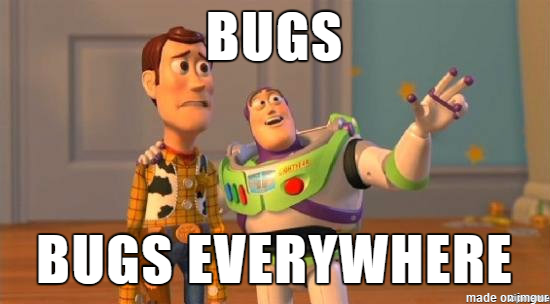
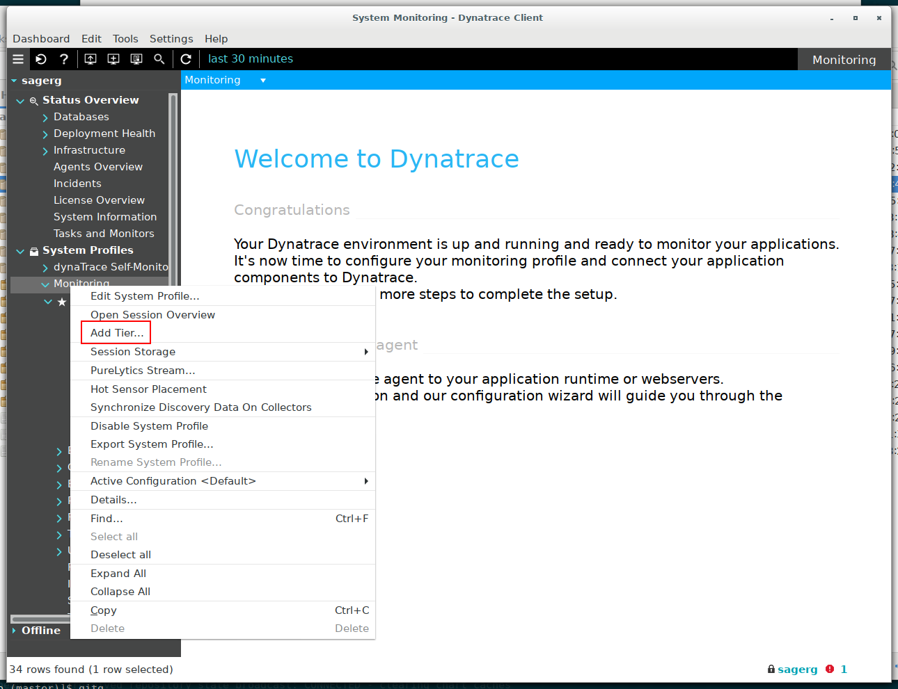

Identificando problemas e erros esquisitos em softwares
(com Dynatrace AppMon)
Plano de execução
- Instalar o Dynatrace AppMon;
- Monitorar o Tomcat (e configurar o AppMon para isso);
- Deployar duas aplicações exemplos e encontrar os erros;
- Intervalo;
- Conheçendo uma aplicação para simulação de um ecommerce.
O que é Dynatrace AppMon?
- Basicamente o Dynatrace AppMon é uma ferramenta de monitoração APM/DPM
- Utilizada para gerenciamento de performance e experiência de usuários em aplicações de várias cores e sabores
- Vamos utilizá-la aqui para realizar algo bem mais simples: Identificar bugs nos programas exemplo

- O intuito é mostrar o básico para se replicar com outras aplicações criadas aqui dentro da Universidade
- Inicie o Client (trocando o diretório de instalação caso não seja o padrão):
~/dynatrace-7.0/dtclient
- Aceite a conexão padrão;
- Importe a licença do arquivo seguindo o wizard;
- Restarte o server;
Monitorando o Tomcat - Adicionando uma tier
